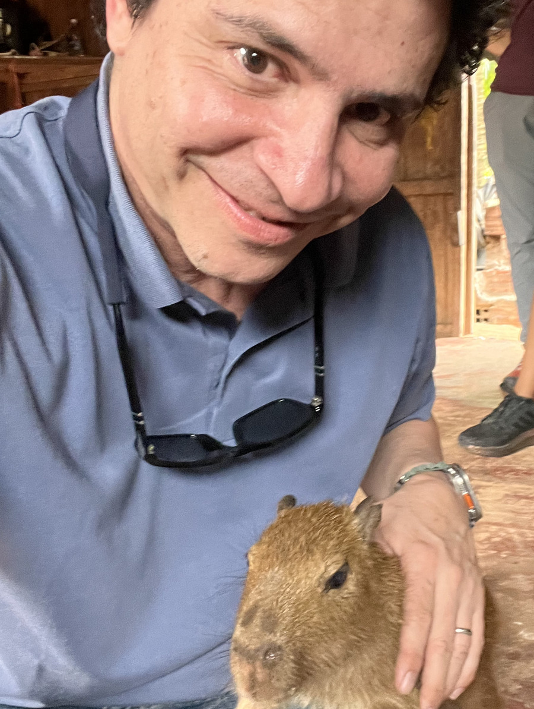
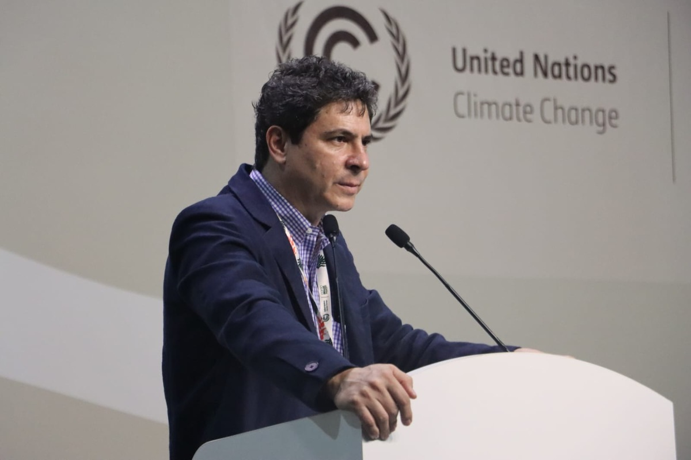

Founder & Director, Blue Planet Contact

Kim Chaix has more than 20 years of senior leadership at the intersection of human rights and environmental conservation across Latin America, Africa, and the US.
Kim began his career as a journalist and documentary producer for outlets including National Geographic, PBS, ABC News, and Animal Planet, before turning to environmental conservation and philanthropy full-time.
Over the course of his career, Kim has held senior leadership roles at organizations including Rainforest Foundation US and Virunga Fund Inc., where he significantly grew philanthropic revenue and helped direct tens of millions of dollars in institutional and private funding to conservation and development programs. He also founded The Charcoal Project, a nonprofit expanding access to clean biomass energy across sub-Saharan Africa, and contributed to communications strategy and major land conservation efforts at The Nature Conservancy’s New York chapter.
A native French and Spanish speaker, Kim grew up between France and Nicaragua. He now lives in Brooklyn, NY, with his partner, their cat, and Sibo, a knucklehead Australian Shepherd. Outside of work, he sails and competes in triathlons.

“If liberty means anything at all it means the right to tell people what they do not want to hear.”